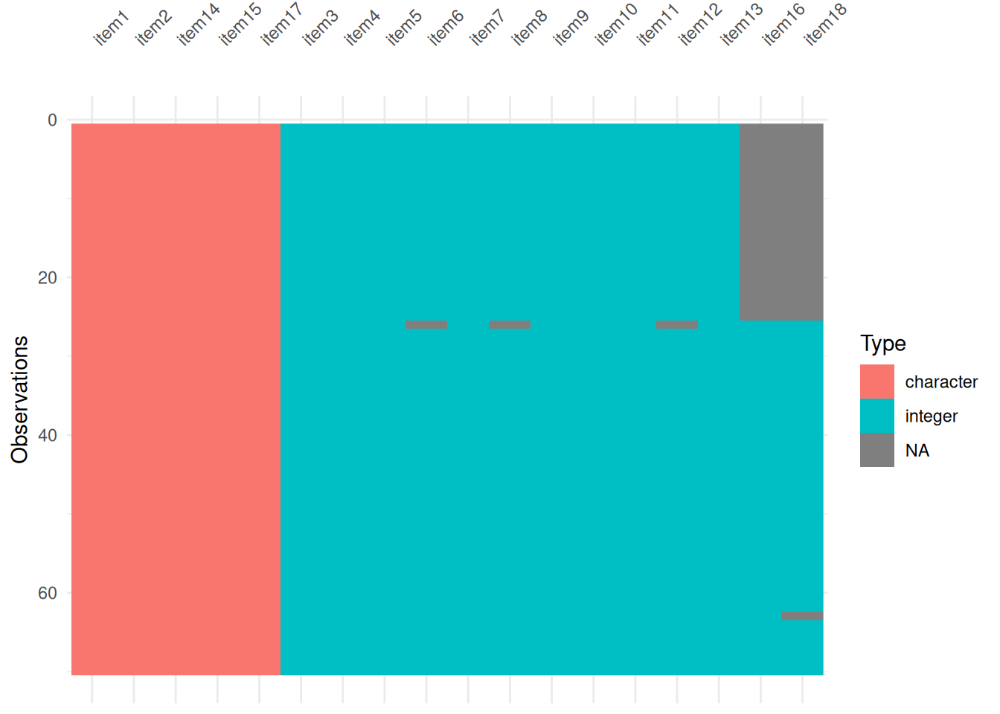
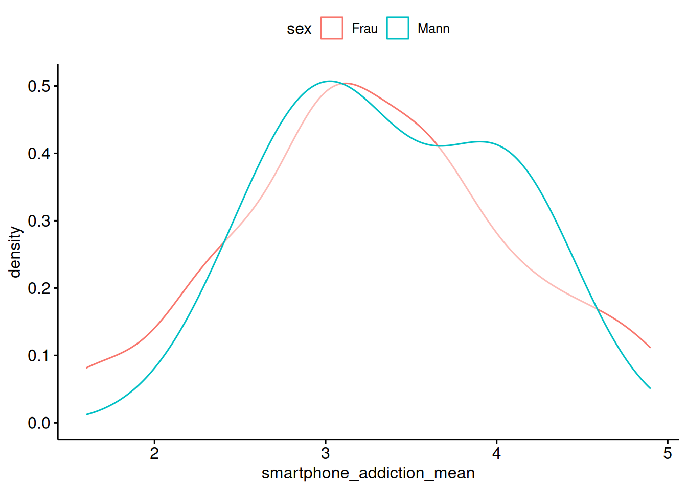
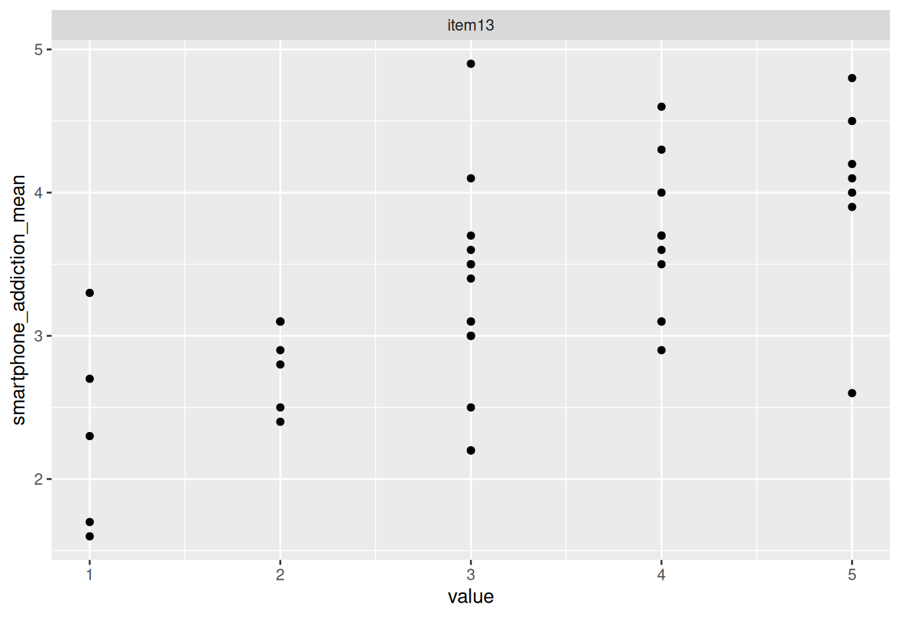
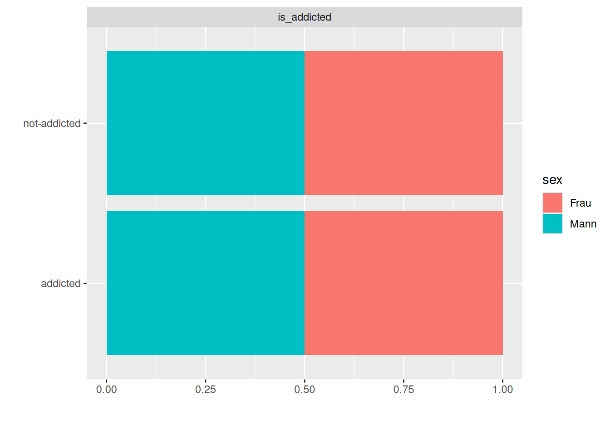
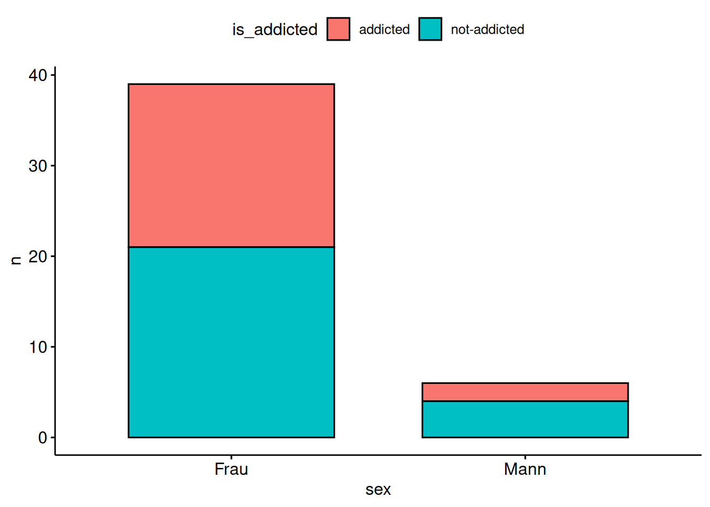
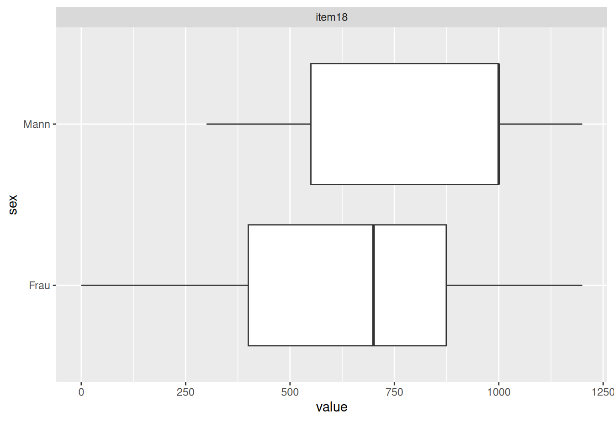

data_path <- "https://raw.githubusercontent.com/sebastiansauer/statistik1/main/data/Smartphone-Nutzung%20(Responses)%20-%20Form%20responses%201.csv"
smartphone_raw <- read.csv(data_path)smartphone1
R
eda
datawrangling
vis
yacsda
1 Aufgabe
In dieser Fallstudie analysieren Sie die Ergebnisse einer Umfrage zum Thema Smartphone-Nutzung.
Kernstück der Umfrage ist die Smartphone-Sucht-Skala (kwon_smartphone_2013?). Eine Studie fand, dass ca. ein Siebtel der Studierenden süchtig nach ihrem Smartphone sind (haug_smartphone_2015?); demnach könnte dem Thema eine hohe Bedeutsamkeit zukommen.
- Importieren Sie den Datensatz zur Handynutzung von Google-Docs.
- Benennen Sie die Spalten um und zwar nach folgendem Muster:
itemXY, wobeiXYdie Nummer der Spalte ist. Sichern Sie die ursprünglichen Spaltennamen in einem Vektor. Tipp: Der Funktionnames(meine_tabelle)können Sie einen Vektor mit neuen Spaltennamen übergeben. - Berechnen Sie für die Items der Smartphone-Addiction-Scale den Mittelwert pro Person. Tipp: Erstellen Sie einen Dataframe mit den entsprechenden Items und nutzen Sie dann die Funktion
rowMeans(mein_dataframe), um den Mittelwert über mehrere Spalten für jede Zeile zu berechnen (“Score”). - Visualisieren Sie die Verteilung des Scores getrennt für die Geschlechter.
- Nach einer Quelle (kwon_smartphone_2013?) liegt der Cutoff-Wert für Sucht bei 3.1 (Männer) bzw. 3.3 (Frauen). Bestimmen Sie den Anteil abhängiger Personen (pro Geschlecht).
- Das Item
i13ist ein Versuch, mit einem einzelnen Item zu messen, ob jemand süchtig nach seinem Smartphone ist (Item-Label: “Ich.würde.sagen..dass.ich.smartphone.süchtig.bin.”). Visualisieren Sie den Zusammenhang dieses Items mit dem Score. - Visualsieren Sie den Anteil abhängiger Personen.
- Berechnen Sie, wie viel Geld für das zuletzt gekaufte Handy im Schnitt ausgegeben wurde. Gruppieren Sie dabei nach dem Betriebsystem.
- Wer gibt mehr Geld für das Handy aus: Frauen oder Männer? Beantworten Sie die Frage anhand des Medians.
- Visualisieren Sie den Median des Geldausgebens für das Handy, getrennt nach Geschlechtern
Tip
Nutzen Sie ChatGPT oder einen anderen Bot, um sich Hilfe mit dem R-Code zu holen. \(\square\)
Tip
Es wird (fast) nie von Ihnen verlangt, dass Sie eine Aufgabe mit einem bestimmten R-Befehl lösen. Wenn Ihnen ein bestimmter R-Befehl nicht zusagt (oder Sie ihn nicht kennen oder verstehen) – dann nehmen Sie einfach einen anderen R-Befehl, der Ihnen mehr zusagt. \(\square\)
Note
Beachten Sie die Hinweise des Datenwerks. \(\square\)
2 Lösung
2.1 Daten importieren
Die Anzahl der Spalten einer Tabelle kann man sich übrigens z.B. mit ncol ausgeben lassen:
anz_spalten <- ncol(smartphone_raw)
anz_spalten[1] 18Unsere Datentabelle hat also 18 Spalten.
2.2 Spalten umbenennen
Zunächst sichern wir die alten Spaltennamen in einen Vektor:
item_labels_old <- names(smartphone_raw)
item_labels_old [1] "Timestamp"
[2] "Wann.haben.Sie.heute.zum.letzten.Mal.Ihr.Handy.benutzt..Bitte.geben.Sie.die.Uhrzeit.an."
[3] "Aufgrund.meiner.Smartphone.Nutzung.erledige.ich.geplante.Aufgaben.nicht."
[4] "Aufgrund.meiner.Smartphone.Nutzung.fällt.es.mir.schwer..mich.in.der.Schule.oder.Arbeit.zu.konzentrieren."
[5] "Bei.der.Nutzung.des.Smartphones.bekomme.ich.Schmerzen.in.Handgelenk.oder.Nacken."
[6] "Ich.würde.es.nicht.aushalten..kein.Smartphone.zu.haben."
[7] "Wenn.ich.mein.Smartphone.nicht.in.der.Hand.habe..fühle.ich.mich.unruhig.und.gereizt."
[8] "Ich.denke.ständig.an.mein.Smartphone..auch.wenn.ich.es.nicht.benutze."
[9] "Ich.werde.nie.aufhören..mein.Smartphone.zu.benutzen..selbst.wenn.mein.Alltag.bereits.stark.davon.beeinflusst.ist."
[10] "Ich.schaue.ständig.auf.mein.Smartphone..um.keine.Neuigkeiten.zu.verpassen."
[11] "Ich.benutze.mein.Smartphone.länger.als.ich.es.vorhabe."
[12] "Die.Menschen.in.meinem.Umfeld.sagen.mir..dass.ich.mein.Smartphone.zu.häufig.nutze."
[13] "Ich.würde.sagen..dass.ich.smartphone.süchtig.bin."
[14] "Hier.ist.Platz.für.Ihre.Kommentare"
[15] "Bitte.geben.Sie.Ihr.Geschlecht.an."
[16] "Bitte.geben.Sie.Ihr.Alter.an."
[17] "Bitte.geben.Sie.das.Betriebssystem.Ihres..am.meisten.genutzten..Handies.an."
[18] "Wie.viel.Geld.haben.Sie.für.Ihr.zuletzt.gekauftes.Handy.gezahlt." Variablen aus psychologischen Fragebögen nennt man übrigens oft items.
Und dann nennen wir die Spaltennamen um. Das geht mit der Funktion names(smartphone_raw) <-, der wir einen Vektor mit neuen Spaltennamen übergeben, z.B. so:
item_labels_new <- c( "item1", "item2", "item3", "item4",
"item5", "item6", "item7", "item8",
"item9", "item10", "item11", "item12",
"item13", "item14", "item15", "item16",
"item17", "item18")Wichtig ist, dass ihr Vektor item_labels_new genau so viele Elemente hat, wie die Datentabelle Spalten hat.
Jetzt können Sie der Funktion names() den neuen Vektor item_labels_new zuweisen und haben damit die Spaltenanmen geändert:
names(smartphone_raw) <- item_labels_newDen Vektor item_labels_new zu erstellen, war Ihnen zu viel Tipperei? Ja, mir auch. Schneller geht’s mit der Funktion paste0. Das erklärt sich am einfachsten mit einem Beispiel:
paste0("item", 1:3)[1] "item1" "item2" "item3"Sehen Sie, was paste0 macht? Es fügt zwei Vektoreneinen Reißverschluss zusammen. Da item nur aus einem Element besteht, wird es item einfach auf die richtige Länge erhöht.
Der Doppelpunkt in 1:3 bedeutet “von 1 bis 3”.
Also:
names(smartphone_raw) <- paste0("item",1:anz_spalten)Sie möchten lieber zweistellige Nummern für die Spalten, also 01, 02, …, 09, 10, …? Gute Idee. Aber wie macht man das? Eine einfache Lösung: Fragen Sie ChatGPT!
👩🎓: I want a string of the type “itemXY”, where XY is a number between 0 and 18. Make sure to use two digits. Use the R function
paste0.
🤖: 😸
2.3 Vertiefung: Fingerabdruck der Datentabelle
Mit dem R-Paket visdat bekommt man einen “Fingerabdruck” der Datentabelle.
Am einfachsten erklärt sich das an einem Beispiel. Schauen Sie sich das folgende Diagramm mal an. Es zeigt Ihnen den Datentyp pro Spalte und außerdem fehlende Werte.
library(visdat)
vis_dat(smartphone_raw)
Das ist deutlich übersichtlicher als eine Excel-Tabelle, wenn es darum geht, die Datenstruktur grob zu verstehen.
2.4 Mittelwert der Smartphone-Addiction-Scale
smartphone_addiction_mittelwert <-
smartphone_raw |>
select(item3:item12) |>
rowMeans()Wir erhalten einen Vektor mit den Mittwerten (Score) pro Person für die Skala Smartphone-Abhängigkeit:
head(smartphone_addiction_mittelwert)[1] 3.0 3.8 2.7 3.2 4.2 3.3Diesen Vektor fügen wir dann unseren Daten hinzu. Außerdem benennen wir die Spalte item15 in sex um, damit wir uns merken können, in welcher Spalte das Geschlecht codiert ist.
smartphone <-
smartphone_raw |>
mutate(smartphone_addiction_mean = smartphone_addiction_mittelwert) |>
rename(sex = item15) |>
filter(sex == "Frau" | sex == "Mann") Mit rename(neuer_name = alter_name) können Sie die Namen von Spalten Ihrer Datentabelle ändern.
🧑🎓 Also das mit
renamehätte ich jetzt nicht gewusst.
👩🏫 Dann frag mal ChatGPT.
🤖 Ja, bitte!!
Alternativ können Sie die folgende, etwas fortgeschrittenere Syntax nutzen:
smartphone2 <-
smartphone_raw |>
rowwise() |>
mutate(smartphone_addiction_mean = mean(c_across(item3:item12))) 2.5 Score visualisieren
Leider kann DataExplorer nicht mehrere Gruppen in einem Dichtediagramm anzeigen. Wir müssten also mit DataExplorer zwei Diagramme erstellen, eines für Frauen und eines für Männer. Eleganter geht es mit dem Paket ggpubr
smartphone |>
ggdensity(x = "smartphone_addiction_mean",
color = "sex")
2.6 Anteil Smartphone-Abhängigkeit
Mit case_when erstellen wir folgende Regel:
- “addicted”: wenn der Score > 3.1 und das Geschlecht “Mann” ist bzw.
- “addicted”: wenn der Score > 3.3 und das Geschlecht “Frau” ist bzw.
- “nicht addicted”: ansonsten
smartphone <-
smartphone |>
mutate(is_addicted =
case_when(smartphone_addiction_mean > 3.1 & sex == "Mann" ~ "addicted",
smartphone_addiction_mean > 3.3 & sex == "Frau" ~ "addicted",
TRUE ~ "not-addicted"))Jetzt haben wir die Spalte is_addicted, die für jede Person (Zeile) angibt, ob die Person addicted ist. Nun zählen wir die Anzahl (n) aus, und zwar pro Geschlechtsgruppe. Weil es praktisch ist, rechen wir die Anzahl noch in einen Anteil (proportion) um.
smartphone_count <-
smartphone |>
group_by(sex) |>
count(is_addicted) |>
mutate(is_addicted_proportion = n / sum(n))
smartphone_count| sex | is_addicted | n | is_addicted_proportion |
|---|---|---|---|
| Frau | addicted | 18 | 0.4615385 |
| Frau | not-addicted | 21 | 0.5384615 |
| Mann | addicted | 2 | 0.3333333 |
| Mann | not-addicted | 4 | 0.6666667 |
2.7 Smartphone-Sucht, mit einzelnen Item gemessen
smartphone |>
select(smartphone_addiction_mean, item13) |>
drop_na() |>
plot_scatterplot(by = "smartphone_addiction_mean")
Es scheint einen Zusammenhang zwischen item13 und smartphone_addiction_mean zu geben.
2.8 Anteil der Abhängigen visualisieren
Der Anteil der abhängigen Personen ist in beiden Geschlechtern gleich hoch:
smartphone_count |>
plot_bar(by = "sex")
Hier noch eine alternative Visualisierung mit dem Paket ggpubr:
smartphone_count |>
ggbarplot(x = "sex", y = "n", fill = "is_addicted")
2.9 Kosten nach Betriebssystem
smartphone |>
group_by(item17) |>
summarise(price_mean = mean(item18, na.rm = TRUE))| item17 | price_mean |
|---|---|
| Android | 412.0000 |
| iOS | 742.3235 |
2.10 Kosten nach Geschlecht
smartphone |>
group_by(sex) |>
summarise(price_median = median(item18, na.rm = TRUE))| sex | price_median |
|---|---|
| Frau | 700 |
| Mann | 1000 |
Männer geben im Median 300 Euro mehr aus.
Tip
Wenn Sie nicht mehr wissen, was z.B. na.rm = TRUE bedeutet, dann einfach googeln oder einen ChatBot fragen. In der Regel ist die Frage dann in zwei Minuten beantwortet. \(\square\)
2.11 Kosten nach Geschlecht visualisieren
smartphone |>
select(sex, item18) |>
plot_boxplot(by = "sex")
Wie man sieht ist der Median bei den Männern höher als bei den Frauen. Allerdings fällt der Median der Männer aus das dritte Quartil, was vermuten lässt, dass da irgendwas nicht stimmt. Schauen wir uns die Daten näher an:
smartphone |>
filter(sex == "Mann")| item1 | item2 | item3 | item4 | item5 | item6 | item7 | item8 | item9 | item10 | item11 | item12 | item13 | item14 | sex | item16 | item17 | item18 | smartphone_addiction_mean | is_addicted |
|---|---|---|---|---|---|---|---|---|---|---|---|---|---|---|---|---|---|---|---|
| 02/05/2024 16:29:51 | 4 | 4 | 3 | NA | 1 | NA | 1 | 4 | 4 | NA | 2 | Mann | 21 | Android | 400 | NA | not-addicted | ||
| 02/05/2024 16:30:37 | 16:20:00 | 2 | 5 | 2 | 4 | 3 | 3 | 3 | 3 | 4 | 2 | 4 | Mann | 19 | iOS | 1000 | 3.1 | not-addicted | |
| 02/05/2024 16:30:42 | 16:20:00 | 1 | 2 | 2 | 4 | 1 | 1 | 6 | 5 | 3 | 1 | 5 | Mann | 22 | iOS | 1200 | 2.6 | not-addicted | |
| 02/05/2024 16:30:48 | 16:30:00 | 5 | 5 | 2 | 6 | 2 | 2 | 5 | 4 | 5 | 4 | 4 | Mann | 19 | Android | 300 | 4.0 | addicted | |
| 02/05/2024 16:30:58 | 16:00:00 | 4 | 2 | 3 | 5 | 2 | 2 | 3 | 4 | 5 | 1 | 2 | Mann | 29 | iOS | 1000 | 3.1 | not-addicted | |
| 02/05/2024 16:31:28 | 16:28:00 | 6 | 6 | 1 | 6 | 3 | 2 | 6 | 3 | 6 | 2 | 5 | Mann | 19 | iOS | 1000 | 4.1 | addicted |
Ah, es sind einfach sehr wenig Männer in diesem Datensatz enthalten.